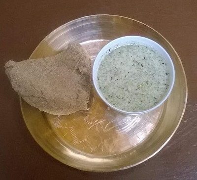

Paba

Description
Paba is a very nutritious food made from roasted barley flour (known as Tsampa in local language).
It is made by roasting barley and grinding it (without removing the bran).
To get a coarse consistency, people usually use traditional water mills.
It is usually eaten with a side dish, because in itself, it is a little bland to taste. It is very simple to make.
Ingredients
- Coarse roast barley flour
- Salt
Steps
- Boil water in a deep pan. Add salt according to your taste.
- Once the water boils, add roasted barley flour. Consistency should be thick.
- Let it cook for few minutes over low eat without stirring.
- Once it becomes thick, remove from heat. Take a flat spatula and mix it properly.
Take a small chunk (by now it should look like a dark, relatively dry dough) and shape it
as shown in the image or any shape you like. You can watch a video if you like.
- You can serve it with "tangtur" (curd, coriander, and chives mixture), pickle, soups, thukpa
Home